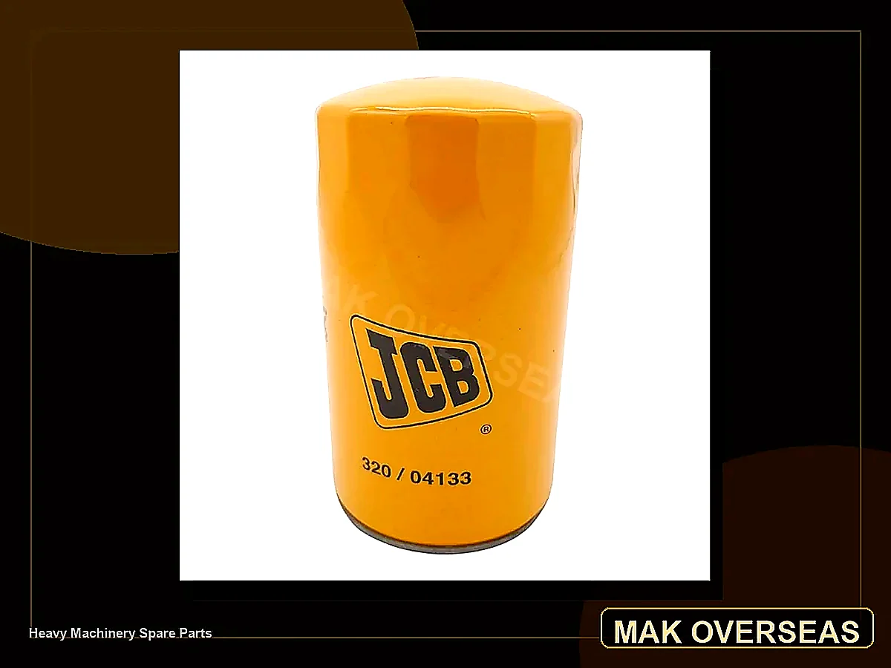

Back to Home
Filters
Brand-wise oil, air, fuel, hydraulic and water-separator filters for Tata, Ashok Leyland, JCB, Komatsu and heavy machinery.

Filter Finder
Search like a parts counter
Enter a part number, application, filter type or brand. Examples: 32004133, 600-211-1341, Tata Ultra, JCB hydraulic, Komatsu oil filter.
Filter listings now include brand group, application, individual part number, material and box/dimension notes. Exact packaging dimensions should be confirmed before dispatch when not published by the OEM or filter manufacturer.